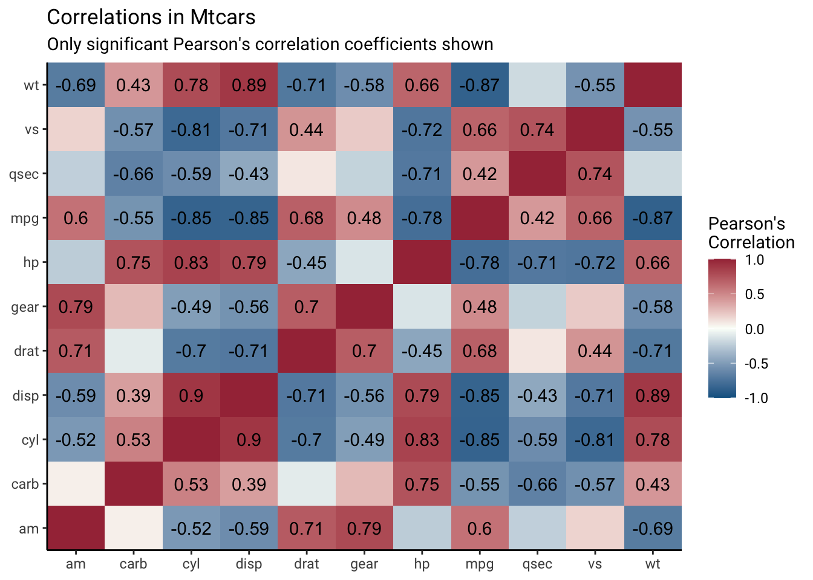
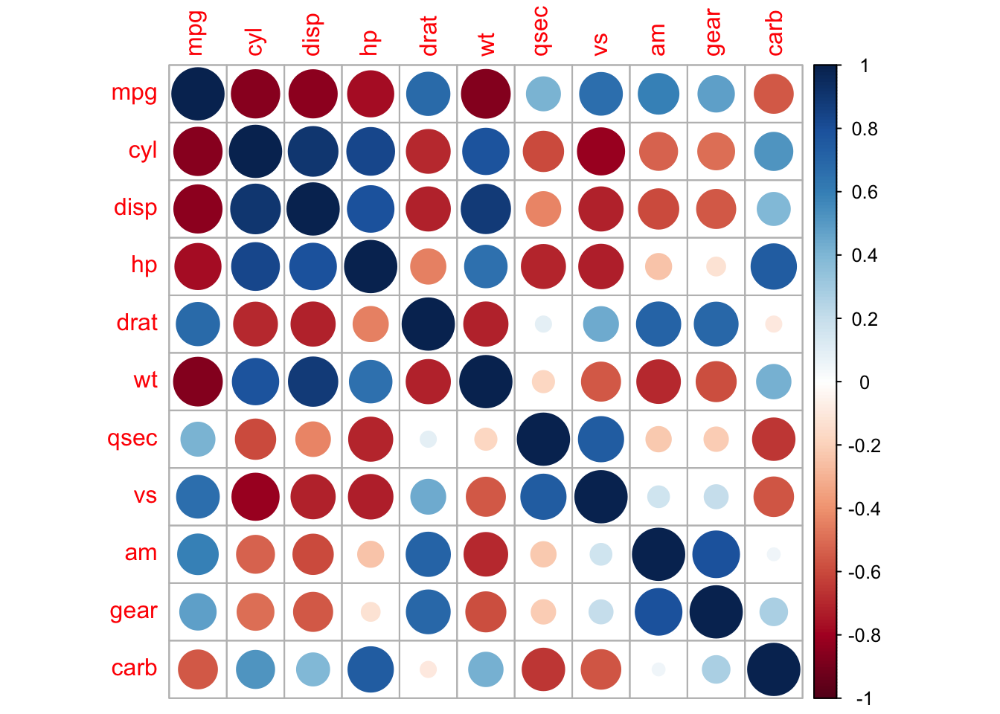
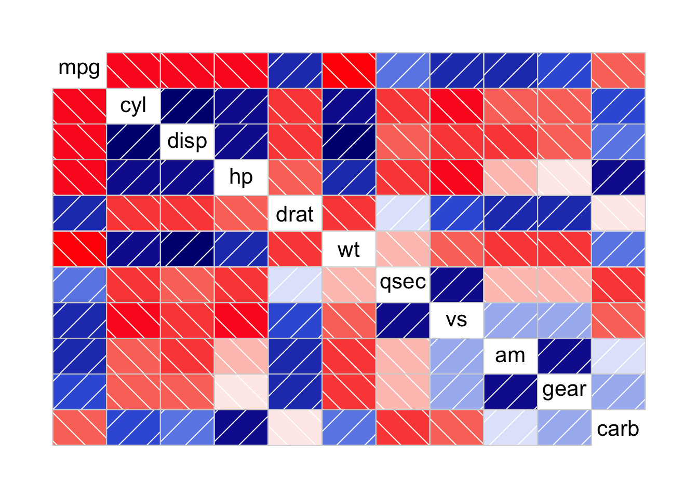
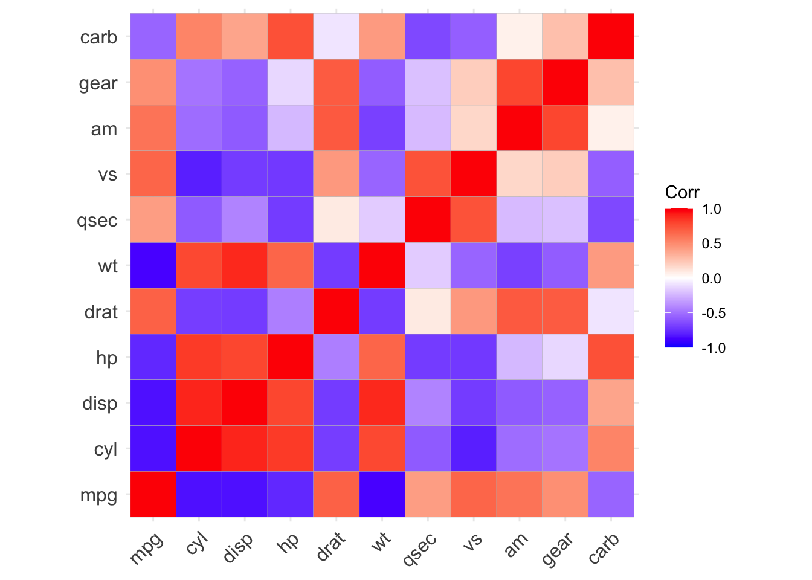
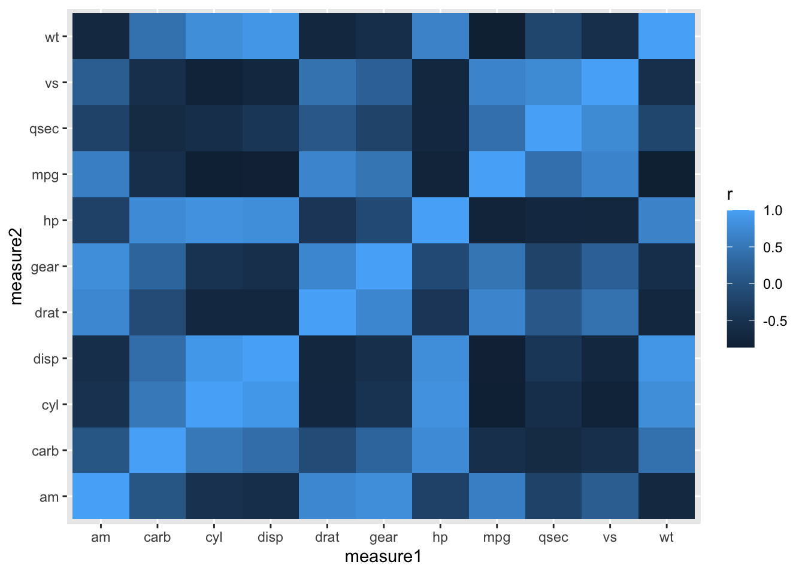
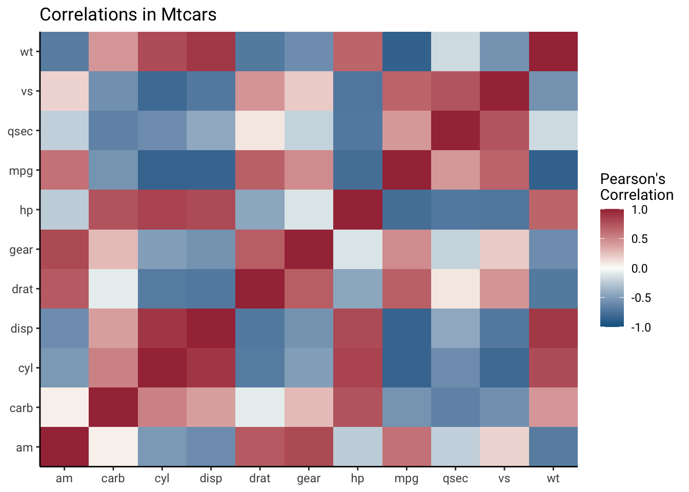
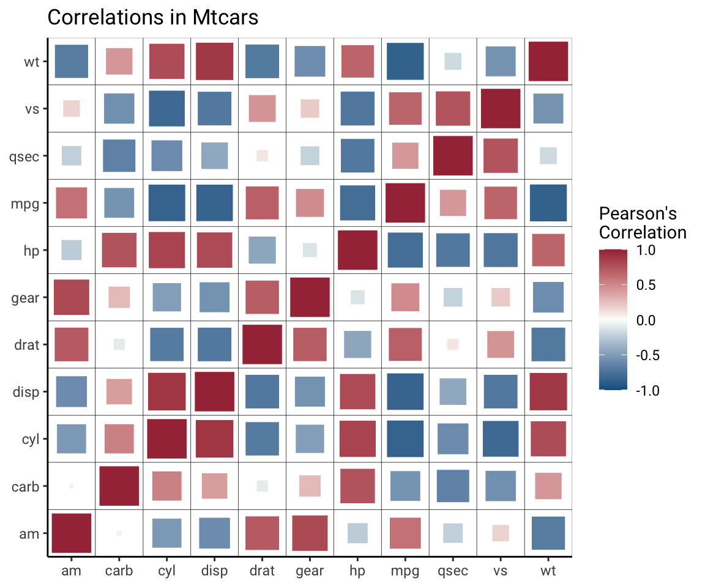

Updated to include gt package August 23, 2022.
If you’re ever felt limited by correlogram packages in R, this post will show you how to write your own function to tidy the many correlations into a ggplot2-friendly form for plotting.
By the end of this post, you will be able to run one function to get a tidied data frame of correlations:
formatted_cors(mtcars) %>% head() %>% gt()| measure1 | measure2 | r | n | p | sig_p | p_if_sig | r_if_sig |
|---|---|---|---|---|---|---|---|
| mpg | mpg | 1.0000000 | 32 | NA | NA | NA | NA |
| mpg | cyl | -0.8521620 | 32 | 6.112688e-10 | TRUE | 6.112688e-10 | -0.8521620 |
| mpg | disp | -0.8475514 | 32 | 9.380328e-10 | TRUE | 9.380328e-10 | -0.8475514 |
| mpg | hp | -0.7761684 | 32 | 1.787835e-07 | TRUE | 1.787835e-07 | -0.7761684 |
| mpg | drat | 0.6811719 | 32 | 1.776240e-05 | TRUE | 1.776240e-05 | 0.6811719 |
| mpg | wt | -0.8676594 | 32 | 1.293958e-10 | TRUE | 1.293958e-10 | -0.8676594 |
You can then run ggplot2 code on this data to make your own correlation heat maps.

If you just want the code, skip to the end.
Less-customizable options
I really appreciate some of the packages and functions that allow me to make correlation plots super quickly using R. Here are a few examples:
corrplot::corrplot(cor(mtcars))
corrgram::corrgram(mtcars)
ggcorrplot::ggcorrplot(cor(mtcars))
All of these are nice, but none of them are ultimately as customizable as I need them to be. I’ll next show how you can bypass using someone else’s function constraints to prepare correlations in your data in a ggplot2-friendly format.
Getting the correlations
We could use the base R function cor() to get our correlations, but I do not like the defaults for missing data. Instead, I use Frank Harrell’s Hmisc::rcorr() function for two reasons:
it drops missing pairs as the default
it returns p-values, so you only need one function to get both the correlation coefficient and matching p-value
Let’s load the libraries we’ll need for this, which are knitr for showing tables using gt, and tidyverse (we’ll specifically use tidyr, dplyr, ggplot2, tibble and purrr).
library(knitr)
library(gt)
library(tidyverse, warn.conflict=F)First, let’s look at our output from our correlation function we’ll use, Hmisc::rcorr(). It requires the input to be a matrix, and outputs a list of three matrices.
mtcars_cor <- Hmisc::rcorr(as.matrix(mtcars))These three matrices include the correlation coefficient (default is Pearson’s), r, the p-value, P, and the number of observations used for each correlation, n. Let’s turn each matrix into a data frame and look at the top six rows with head and gt.
The correlation coefficients, r:
data.frame(mtcars_cor$r) %>% head() %>% gt()| mpg | cyl | disp | hp | drat | wt | qsec | vs | am | gear | carb |
|---|---|---|---|---|---|---|---|---|---|---|
| 1.0000000 | -0.8521620 | -0.8475514 | -0.7761684 | 0.6811719 | -0.8676594 | 0.41868403 | 0.6640389 | 0.5998324 | 0.4802848 | -0.5509251 |
| -0.8521620 | 1.0000000 | 0.9020329 | 0.8324475 | -0.6999381 | 0.7824958 | -0.59124207 | -0.8108118 | -0.5226070 | -0.4926866 | 0.5269883 |
| -0.8475514 | 0.9020329 | 1.0000000 | 0.7909486 | -0.7102139 | 0.8879799 | -0.43369788 | -0.7104159 | -0.5912270 | -0.5555692 | 0.3949769 |
| -0.7761684 | 0.8324475 | 0.7909486 | 1.0000000 | -0.4487591 | 0.6587479 | -0.70822339 | -0.7230967 | -0.2432043 | -0.1257043 | 0.7498125 |
| 0.6811719 | -0.6999381 | -0.7102139 | -0.4487591 | 1.0000000 | -0.7124406 | 0.09120476 | 0.4402785 | 0.7127111 | 0.6996101 | -0.0907898 |
| -0.8676594 | 0.7824958 | 0.8879799 | 0.6587479 | -0.7124406 | 1.0000000 | -0.17471588 | -0.5549157 | -0.6924953 | -0.5832870 | 0.4276059 |
The p-values, P:
data.frame(mtcars_cor$P) %>% head() %>% gt()| mpg | cyl | disp | hp | drat | wt | qsec | vs | am | gear | carb |
|---|---|---|---|---|---|---|---|---|---|---|
| NA | 6.112688e-10 | 9.380328e-10 | 1.787835e-07 | 1.776240e-05 | 1.293958e-10 | 1.708199e-02 | 3.415937e-05 | 2.850207e-04 | 5.400948e-03 | 1.084446e-03 |
| 6.112688e-10 | NA | 1.803002e-12 | 3.477861e-09 | 8.244636e-06 | 1.217567e-07 | 3.660533e-04 | 1.843018e-08 | 2.151207e-03 | 4.173297e-03 | 1.942340e-03 |
| 9.380328e-10 | 1.803002e-12 | NA | 7.142679e-08 | 5.282022e-06 | 1.222311e-11 | 1.314404e-02 | 5.235012e-06 | 3.662114e-04 | 9.635921e-04 | 2.526789e-02 |
| 1.787835e-07 | 3.477861e-09 | 7.142679e-08 | NA | 9.988772e-03 | 4.145827e-05 | 5.766253e-06 | 2.940896e-06 | 1.798309e-01 | 4.930119e-01 | 7.827810e-07 |
| 1.776240e-05 | 8.244636e-06 | 5.282022e-06 | 9.988772e-03 | NA | 4.784260e-06 | 6.195826e-01 | 1.167553e-02 | 4.726790e-06 | 8.360110e-06 | 6.211834e-01 |
| 1.293958e-10 | 1.217567e-07 | 1.222311e-11 | 4.145827e-05 | 4.784260e-06 | NA | 3.388683e-01 | 9.798492e-04 | 1.125440e-05 | 4.586601e-04 | 1.463861e-02 |
The number of observations, n. There are no missing data in the mtcars data set so there are 32 pairs used for all correlations.
data.frame(mtcars_cor$n) %>% head(n=3) %>% gt()| mpg | cyl | disp | hp | drat | wt | qsec | vs | am | gear | carb |
|---|---|---|---|---|---|---|---|---|---|---|
| 32 | 32 | 32 | 32 | 32 | 32 | 32 | 32 | 32 | 32 | 32 |
| 32 | 32 | 32 | 32 | 32 | 32 | 32 | 32 | 32 | 32 | 32 |
| 32 | 32 | 32 | 32 | 32 | 32 | 32 | 32 | 32 | 32 | 32 |
Next we can write a function that formats a data frame correctly for Hmisc::rcorr() and then turns each of the three elements of the list (r,n and P)
cors <- function(df) {
M <- Hmisc::rcorr(as.matrix(df))
# turn all three matrices (r, n, and P into a data frame)
Mdf <- map(M, ~data.frame(.x))
# return the three data frames in a list
return(Mdf)
}Nothing too crazy happened in this function. Now we just have a list of three data frames. We can look at the the first element of our list using first(), which shows us the correlations between all our variables:
cors(mtcars) %>% first() %>% head() %>% gt()| mpg | cyl | disp | hp | drat | wt | qsec | vs | am | gear | carb |
|---|---|---|---|---|---|---|---|---|---|---|
| 1.0000000 | -0.8521620 | -0.8475514 | -0.7761684 | 0.6811719 | -0.8676594 | 0.41868403 | 0.6640389 | 0.5998324 | 0.4802848 | -0.5509251 |
| -0.8521620 | 1.0000000 | 0.9020329 | 0.8324475 | -0.6999381 | 0.7824958 | -0.59124207 | -0.8108118 | -0.5226070 | -0.4926866 | 0.5269883 |
| -0.8475514 | 0.9020329 | 1.0000000 | 0.7909486 | -0.7102139 | 0.8879799 | -0.43369788 | -0.7104159 | -0.5912270 | -0.5555692 | 0.3949769 |
| -0.7761684 | 0.8324475 | 0.7909486 | 1.0000000 | -0.4487591 | 0.6587479 | -0.70822339 | -0.7230967 | -0.2432043 | -0.1257043 | 0.7498125 |
| 0.6811719 | -0.6999381 | -0.7102139 | -0.4487591 | 1.0000000 | -0.7124406 | 0.09120476 | 0.4402785 | 0.7127111 | 0.6996101 | -0.0907898 |
| -0.8676594 | 0.7824958 | 0.8879799 | 0.6587479 | -0.7124406 | 1.0000000 | -0.17471588 | -0.5549157 | -0.6924953 | -0.5832870 | 0.4276059 |
Prep the correlations for ggplot2
The next step is to get the data ready for plotting with ggplot2. We can keep the data in a list for now and use the map() function from purrr.
First, we need to move the rownames to their own column using tibble::rownames_to_column(). The output of that looks like:
cors(mtcars) %>%
map(~rownames_to_column(.x, var="measure1")) %>%
# look at the first element of the list (r)
first() %>%
head() %>%
gt()| measure1 | mpg | cyl | disp | hp | drat | wt | qsec | vs | am | gear | carb |
|---|---|---|---|---|---|---|---|---|---|---|---|
| mpg | 1.0000000 | -0.8521620 | -0.8475514 | -0.7761684 | 0.6811719 | -0.8676594 | 0.41868403 | 0.6640389 | 0.5998324 | 0.4802848 | -0.5509251 |
| cyl | -0.8521620 | 1.0000000 | 0.9020329 | 0.8324475 | -0.6999381 | 0.7824958 | -0.59124207 | -0.8108118 | -0.5226070 | -0.4926866 | 0.5269883 |
| disp | -0.8475514 | 0.9020329 | 1.0000000 | 0.7909486 | -0.7102139 | 0.8879799 | -0.43369788 | -0.7104159 | -0.5912270 | -0.5555692 | 0.3949769 |
| hp | -0.7761684 | 0.8324475 | 0.7909486 | 1.0000000 | -0.4487591 | 0.6587479 | -0.70822339 | -0.7230967 | -0.2432043 | -0.1257043 | 0.7498125 |
| drat | 0.6811719 | -0.6999381 | -0.7102139 | -0.4487591 | 1.0000000 | -0.7124406 | 0.09120476 | 0.4402785 | 0.7127111 | 0.6996101 | -0.0907898 |
| wt | -0.8676594 | 0.7824958 | 0.8879799 | 0.6587479 | -0.7124406 | 1.0000000 | -0.17471588 | -0.5549157 | -0.6924953 | -0.5832870 | 0.4276059 |
Next, we can turn move of the columns to a single column called measure2 using tidyr::pivot_longer()
cors(mtcars) %>%
map(~rownames_to_column(.x, var="measure1")) %>%
# format each data set (r,P,n) long
map(~pivot_longer(.x, -measure1, "measure2")) %>%
# look at the first element of the list (r)
first() %>%
head() %>%
gt()| measure1 | measure2 | value |
|---|---|---|
| mpg | mpg | 1.0000000 |
| mpg | cyl | -0.8521620 |
| mpg | disp | -0.8475514 |
| mpg | hp | -0.7761684 |
| mpg | drat | 0.6811719 |
| mpg | wt | -0.8676594 |
Now, we’re ready to unlist our data by using bind_rows(). This will turn our correlations into a very long data frame with all the rows from r, then n, then P.
cors(mtcars) %>%
map(~rownames_to_column(.x, var="measure1")) %>%
# format each data set (r,P,n) long
map(~pivot_longer(.x, -measure1, "measure2")) %>%
# merge our three list elements by binding the rows
bind_rows(.id = "id") %>%
head() %>%
gt()| id | measure1 | measure2 | value |
|---|---|---|---|
| r | mpg | mpg | 1.0000000 |
| r | mpg | cyl | -0.8521620 |
| r | mpg | disp | -0.8475514 |
| r | mpg | hp | -0.7761684 |
| r | mpg | drat | 0.6811719 |
| r | mpg | wt | -0.8676594 |
For ggplot2, we’ll need to have r, n, and p as their own column. We can use pivot_longer() to do this.
cors(mtcars) %>%
map(~rownames_to_column(.x, var="measure1")) %>%
# format each data set (r,P,n) long
map(~pivot_longer(.x, -measure1, "measure2")) %>%
# merge our three list elements by binding the rows
bind_rows(.id = "id") %>%
pivot_wider(names_from = id, values_from = value) %>%
head() %>%
gt()| measure1 | measure2 | r | n | P |
|---|---|---|---|---|
| mpg | mpg | 1.0000000 | 32 | NA |
| mpg | cyl | -0.8521620 | 32 | 6.112688e-10 |
| mpg | disp | -0.8475514 | 32 | 9.380328e-10 |
| mpg | hp | -0.7761684 | 32 | 1.787835e-07 |
| mpg | drat | 0.6811719 | 32 | 1.776240e-05 |
| mpg | wt | -0.8676594 | 32 | 1.293958e-10 |
Finally, we can add a few columns that will potentially be useful later for making our correlation plots more informative. Let’s add columns that tell us whether the p-value was less than 0.05, and if so, give us back 1) the p-value and 2) the correlation coefficient, in case we want to label our plot with these values.
cors(mtcars) %>%
map(~rownames_to_column(.x, var="measure1")) %>%
# format each data set (r,P,n) long
map(~pivot_longer(.x, -measure1, "measure2")) %>%
# merge our three list elements by binding the rows
bind_rows(.id = "id") %>%
pivot_wider(names_from = id, values_from = value) %>%
# change so everything is lower case
rename(p = P) %>%
mutate(sig_p = ifelse(p < .05, T, F),
p_if_sig = ifelse(sig_p, p, NA),
r_if_sig = ifelse(sig_p, r, NA)) %>%
head() %>%
gt()| measure1 | measure2 | r | n | p | sig_p | p_if_sig | r_if_sig |
|---|---|---|---|---|---|---|---|
| mpg | mpg | 1.0000000 | 32 | NA | NA | NA | NA |
| mpg | cyl | -0.8521620 | 32 | 6.112688e-10 | TRUE | 6.112688e-10 | -0.8521620 |
| mpg | disp | -0.8475514 | 32 | 9.380328e-10 | TRUE | 9.380328e-10 | -0.8475514 |
| mpg | hp | -0.7761684 | 32 | 1.787835e-07 | TRUE | 1.787835e-07 | -0.7761684 |
| mpg | drat | 0.6811719 | 32 | 1.776240e-05 | TRUE | 1.776240e-05 | 0.6811719 |
| mpg | wt | -0.8676594 | 32 | 1.293958e-10 | TRUE | 1.293958e-10 | -0.8676594 |
This seems like everything I think I’ll ever ever want to plot. Of course you could add more. At this point I turned my formatted correlations into a function:
formatted_cors <- function(df){
cors(df) %>%
map(~rownames_to_column(.x, var="measure1")) %>%
map(~pivot_longer(.x, -measure1, "measure2")) %>%
bind_rows(.id = "id") %>%
pivot_wider(names_from = id, values_from = value) %>%
rename(p = P) %>%
mutate(sig_p = ifelse(p < .05, T, F),
p_if_sig = ifelse(sig_p, p, NA),
r_if_sig = ifelse(sig_p, r, NA))
}We can test the function works as expected:
formatted_cors(mtcars) %>% head() %>% gt()| measure1 | measure2 | r | n | p | sig_p | p_if_sig | r_if_sig |
|---|---|---|---|---|---|---|---|
| mpg | mpg | 1.0000000 | 32 | NA | NA | NA | NA |
| mpg | cyl | -0.8521620 | 32 | 6.112688e-10 | TRUE | 6.112688e-10 | -0.8521620 |
| mpg | disp | -0.8475514 | 32 | 9.380328e-10 | TRUE | 9.380328e-10 | -0.8475514 |
| mpg | hp | -0.7761684 | 32 | 1.787835e-07 | TRUE | 1.787835e-07 | -0.7761684 |
| mpg | drat | 0.6811719 | 32 | 1.776240e-05 | TRUE | 1.776240e-05 | 0.6811719 |
| mpg | wt | -0.8676594 | 32 | 1.293958e-10 | TRUE | 1.293958e-10 | -0.8676594 |
Plotting
We’re finally ready to plot our correlation heat maps in ggplot2.
The simplest form of this plot only requires us to specify measure1 and measure2 on the x and y-axis, respectively. Then we can map the correlation r to the fill aesthetic, and add a tile as the geometry.
formatted_cors(mtcars) %>%
ggplot(aes(x = measure1, y = measure2, fill = r)) +
geom_tile()
We can make some minor aesthetic changes, such as the fill coloring scale, titles, and font family.
formatted_cors(mtcars) %>%
ggplot(aes(x = measure1, y = measure2, fill = r)) +
geom_tile() +
labs(x = NULL, y = NULL, fill = "Pearson's\nCorrelation", title="Correlations in Mtcars") +
# map a red, white and blue color scale to correspond to -1:1 sequential gradient
scale_fill_gradient2(mid="#FBFEF9",low="#0C6291",high="#A63446", limits=c(-1,1)) +
theme_classic() +
# remove excess space on x and y axes
scale_x_discrete(expand=c(0,0)) +
scale_y_discrete(expand=c(0,0)) +
# change global font to roboto
theme(text=element_text(family="Roboto"))
We can add the correlations for extra information. For this particular plot, I only added significant (p-value less than 0.05) correlations, using the column r_if_sig that outputs from formatted_cors().
formatted_cors(mtcars) %>%
ggplot(aes(measure1, measure2, fill=r, label=round(r_if_sig,2))) +
geom_tile() +
labs(x = NULL, y = NULL, fill = "Pearson's\nCorrelation", title="Correlations in Mtcars",
subtitle="Only significant Pearson's correlation coefficients shown") +
scale_fill_gradient2(mid="#FBFEF9",low="#0C6291",high="#A63446", limits=c(-1,1)) +
geom_text() +
theme_classic() +
scale_x_discrete(expand=c(0,0)) +
scale_y_discrete(expand=c(0,0)) +
theme(text=element_text(family="Roboto"))Another version of this could involve squares with different sizes to denote strength of correlation using geom_point with shape set to a value from these available geom_shapes. Make sure you take the absolute value of the correlation so that strong negative correlations can also be denoted larger.
formatted_cors(mtcars) %>%
ggplot(aes(measure1, measure2, col=r)) + ## to get the rect filled
geom_tile(col="black", fill="white") +
geom_point(aes(size = abs(r)), shape=15) +
labs(x = NULL, y = NULL, col = "Pearson's\nCorrelation", title="Correlations in Mtcars") +
theme_classic()+
scale_color_gradient2(mid="#FBFEF9",low="#0C6291",high="#A63446", limits=c(-1,1)) +
scale_x_discrete(expand=c(0,0)) +
scale_y_discrete(expand=c(0,0)) +
theme(text=element_text(family="Roboto")) +
scale_size(range=c(1,11), guide=NULL) 
Please feel free to reach out with questions or suggestions. Thank you to Elena Leib for spotting a minor bug in a previous version of this post!
Just the code
cors <- function(df) {
M <- Hmisc::rcorr(as.matrix(df))
Mdf <- map(M, ~data.frame(.x))
return(Mdf)
}
formatted_cors <- function(df){
cors(df) %>%
map(~rownames_to_column(.x, var="measure1")) %>%
map(~pivot_longer(.x, -measure1, "measure2")) %>%
bind_rows(.id = "id") %>%
pivot_wider(names_from = id, values_from = value) %>%
rename(p = P) %>%
mutate(sig_p = ifelse(p < .05, T, F),
p_if_sig = ifelse(sig_p, p, NA),
r_if_sig = ifelse(sig_p, r, NA))
}
formatted_cors(mtcars) %>%
ggplot(aes(measure1, measure2, fill=r, label=round(r_if_sig,2))) +
geom_tile() +
labs(x = NULL, y = NULL, fill = "Pearson's\nCorrelation", title="Correlations in Mtcars",
subtitle="Only significant Pearson's correlation coefficients shown") +
scale_fill_gradient2(mid="#FBFEF9",low="#0C6291",high="#A63446", limits=c(-1,1)) +
geom_text() +
theme_classic() +
scale_x_discrete(expand=c(0,0)) +
scale_y_discrete(expand=c(0,0)) +
theme(text=element_text(family="Roboto"))
Session info
sessionInfo()R version 4.1.3 (2022-03-10) Platform: x86_64-apple-darwin17.0 (64-bit) Running under: macOS Catalina 10.15.7
Matrix products: default BLAS: /Library/Frameworks/R.framework/Versions/4.1/Resources/lib/libRblas.0.dylib LAPACK: /Library/Frameworks/R.framework/Versions/4.1/Resources/lib/libRlapack.dylib
locale: [1] en_US.UTF-8/en_US.UTF-8/en_US.UTF-8/C/en_US.UTF-8/en_US.UTF-8
attached base packages: [1] stats graphics grDevices utils datasets methods base
other attached packages: [1] gt_0.6.0 knitr_1.38 forcats_0.5.1 stringr_1.4.1
[5] dplyr_1.0.9 purrr_0.3.4 readr_2.1.2 tidyr_1.2.0
[9] tibble_3.1.8 ggplot2_3.3.6 tidyverse_1.3.1
loaded via a namespace (and not attached): [1] fs_1.5.2 lubridate_1.8.0 RColorBrewer_1.1-3 [4] httr_1.4.2 tools_4.1.3 backports_1.4.1
[7] utf8_1.2.2 R6_2.5.1 rpart_4.1.16
[10] Hmisc_4.7-0 DBI_1.1.2 colorspace_2.0-3
[13] nnet_7.3-17 withr_2.5.0 tidyselect_1.1.2
[16] gridExtra_2.3 cabinets_0.6.0 compiler_4.1.3
[19] cli_3.3.0 rvest_1.0.2 htmlTable_2.4.0
[22] xml2_1.3.3 labeling_0.4.2 sass_0.4.1
[25] scales_1.2.1 checkmate_2.0.0 digest_0.6.29
[28] foreign_0.8-82 rmarkdown_2.13 base64enc_0.1-3
[31] jpeg_0.1-9 pkgconfig_2.0.3 htmltools_0.5.2
[34] dbplyr_2.1.1 fastmap_1.1.0 htmlwidgets_1.5.4
[37] rlang_1.0.4 readxl_1.4.0 rstudioapi_0.13
[40] generics_0.1.3 farver_2.1.1 jsonlite_1.8.0
[43] magrittr_2.0.3 Formula_1.2-4 Matrix_1.4-0
[46] Rcpp_1.0.9 munsell_0.5.0 fansi_1.0.3
[49] lifecycle_1.0.1 stringi_1.7.8 yaml_2.3.5
[52] plyr_1.8.7 grid_4.1.3 crayon_1.5.1
[55] lattice_0.20-45 haven_2.5.0 splines_4.1.3
[58] hms_1.1.1 pillar_1.8.1 reshape2_1.4.4
[61] reprex_2.0.1 glue_1.6.2 evaluate_0.15
[64] latticeExtra_0.6-29 data.table_1.14.2 modelr_0.1.8
[67] png_0.1-7 vctrs_0.4.1 tzdb_0.3.0
[70] cellranger_1.1.0 gtable_0.3.0 assertthat_0.2.1
[73] xfun_0.32 broom_0.8.0 ggcorrplot_0.1.3
[76] survival_3.2-13 corrgram_1.14 cluster_2.1.2
[79] corrplot_0.92 ellipsis_0.3.2